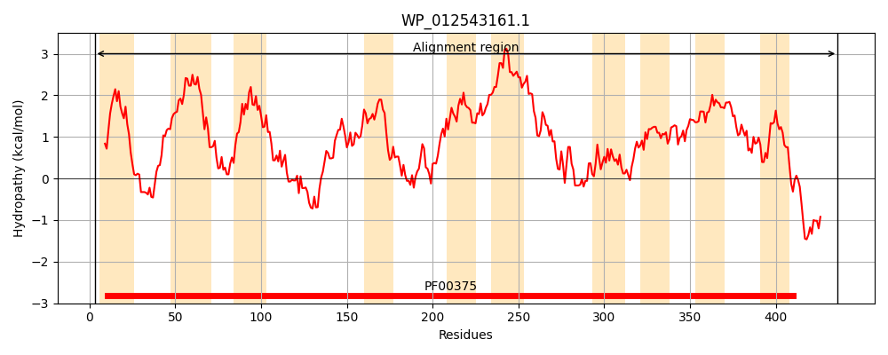
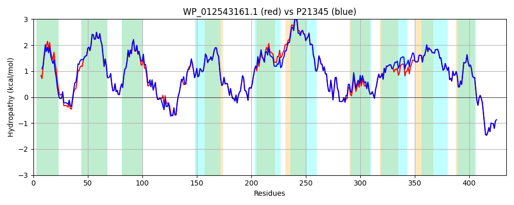

Hit Accession: P21345
Hit TCID: 2.A.23.1.1
Hit Description: gnl|BL_ORD_ID|9352 gnl|TC-DB|P21345|2.A.23.1.1 PROTON GLUTAMATE SYMPORT PROTEIN (GLUTAMATE-ASPARTATE CARRIER PROTEIN) - Escherichia coli.
Mach Len: 434
e:0.000000
Query TMS Count : 10
Hit TMS Count: 10
TMS-Overlap Score: 9.000000
Predicted Substrates:CHEBI:29987;glutamate(2-), CHEBI:29995;aspartate(2-)
BLAST Alignment:
Score: 2023 , Bit scores: 783 bits, E-value: 0.0e+00, Alignment length: 434, Percentage identity: 94
Query: 3 KTKKVSLAWQILLALVLGILLGSYLHYHAESRDWLISNLLTPAGDIFIHLIKMIVVPIVISTLVVGIAGVGDAKQLGRIGAKTIIYFEVITTVAIVLGITLANVFQPGTGIDMSQLAAVDISKYQSTTAEVQSHAHGLMGTILSLVPTNIVASMAKGDMLPIIFFSVLFGLGLSSLPATHREPLVTVFRSISETMFKVTHMVMRYAPIGVFALISVTVATFGFASLWPLAKLVLLVYFAILFFALVVLGIVARLCGLSIWILIRILKDELILAYSTASSESVLPRIIEKMEAYGAPASITSFVVPTGYSFNLDGSTLYQSIAAIFIAQLYGIDLSIWQEITLVLTLMVTSKGIAGVPGVSFVVLLATLGSVGIPLEGLAFIAGVDRILDMARTALNVVGNALAVLVIAKWEHKFDRKKALAYEREVLGKFDKTA 436
K K SLAWQIL A+VLGILLGSYLHYH++SRDWL+ NLL+PAGDIFIHLIKMIVVPIVISTLVVGIAGVGDAKQLGRIGAKTIIYFEVITTVAI+LGITLANVFQPG G+DMSQLA VDISKYQSTT VQS +HG+MGTILSLVPTNIVASMAKG+MLPIIFFSVLFGLGLSSLPATHREPLVTVFRSISETMFKVTHMVMRYAP+GVFALI+VTVA FGF+SLWPLAKLVLLV+FAILFFALVVLGIVARLCGLS+WILIRILKDELILAYSTASSESVLPRIIEKMEAYGAP SITSFVVPTGYSFNLDGSTLYQSIAAIFIAQLYGIDLSIWQEI LVLTLMVTSKGIAGVPGVSFVVLLATLGSVGIPLEGLAFIAGVDRILDMARTALNVVGNALAVLVIAKWEHKFDRKKALAYEREVLGKFDKTA
Sbjct: 2 KNIKFSLAWQILFAMVLGILLGSYLHYHSDSRDWLVVNLLSPAGDIFIHLIKMIVVPIVISTLVVGIAGVGDAKQLGRIGAKTIIYFEVITTVAIILGITLANVFQPGAGVDMSQLATVDISKYQSTTEAVQSSSHGIMGTILSLVPTNIVASMAKGEMLPIIFFSVLFGLGLSSLPATHREPLVTVFRSISETMFKVTHMVMRYAPVGVFALIAVTVANFGFSSLWPLAKLVLLVHFAILFFALVVLGIVARLCGLSVWILIRILKDELILAYSTASSESVLPRIIEKMEAYGAPVSITSFVVPTGYSFNLDGSTLYQSIAAIFIAQLYGIDLSIWQEIILVLTLMVTSKGIAGVPGVSFVVLLATLGSVGIPLEGLAFIAGVDRILDMARTALNVVGNALAVLVIAKWEHKFDRKKALAYEREVLGKFDKTA 435 | Protein Hydropathy Plots: |
|---|
|  |  |
Pairwise Alignment-Hydropathy Plot:
|
|---|
|  |